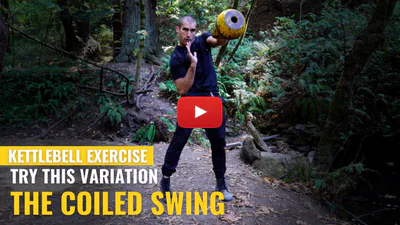

B593 · Try This Variation - The Coiled Kettlebell Swing
Hi {first_name},
2-hand swing...no problem
1-hand swing...nailed it
Coiled swing...now we’re talking
Foundational movements are great because you can build on them. If you’ve been training for a little while, adding complexity to your movements will do wonders for your ability to move with precision, grace, and more power!
Training the coiled position has huge carry over for expressing strength as a human being. Locomotion - moving - starts with the coil.
If you want to get more athletic, use this coiled swing. If you want to be able to better express the strength you build, use this coiled swing.
Watch this ~5 minute video to see exactly how to perform the coiled swing.
 Keep training intentionally, Mike Salemi
|